This Issue
August 2026 edition
59 vs 115
Distinct operators recording a flip resale this edition, versus the same two months a year ago
Flip resales are down 45% year over year, and the pool of operators recording those exits has halved — the ten largest now take 55.5% of flip revenue
Flip resales fell to 123 from 224 a year ago, and the number of operators recording an exit fell in step, 59 versus 115. What is left is more concentrated: the ten largest sellers took 55.5% of flip revenue, against 48.0% a year ago. Terms tightened as volume thinned, with median gross margin of $82,000 (40.5%) versus $89,000 (45.3%) a year ago, on a median hold of 174 days versus 196.5. Recorded counts lag four to eight weeks, but the prior period pointed the same way at 180 resales.
Investor Playbook
What this issue's numbers suggest checking, by investor type. Observations from recorded data — not investment, legal, or tax advice.
Fewer buyers at the table means a shorter, more specific list
Wholesalers
Only 59 operators recorded a resale this edition, against 115 a year ago, so the disposition list is smaller than it was. Five assignments surfaced on deeds (median spread $20,000, versus $24,990 in the prior period) — a floor, not a count. Worth checking: match product to what the remaining active buyers actually sold, a median 1,456 sqft, 3-bed, 1977-vintage house, and lean on 85706 and 85710, each 9.8% of period flips.
Underwrite to a 174-day hold and a 40.5% gross margin, not last year's
Flippers
Median gross margin came in at $82,000 (40.5%) versus $89,000 (45.3%) a year ago, on a 174-day median hold versus 196.5. Resale pricing per foot barely moved, $202.71 versus $205.96, so the compression is on the buy side and in carry. The data suggests testing bids against a 5.7-month hold with 21% of exits historically running past a year, and noting that 70 held properties aged out of the window in the latest month.
Acquisition basis has come down $20,000 at the median
Landlords
Median investor purchase was $313,000, down from $333,000 a year ago, with 1,253 purchases recorded against 1,154. The cheaper recorded bands worth screening: 85705 Amphi / North Tucson at a $195,000 median buy on 64 purchases, 85713 at $220,000 on 46, and mobile/manufactured product at $118,147 and $117/sqft across 97 deals. With flip exits thin, competition for tired 1970s stock — 211 purchases in that decade band — is lighter than last year.
The recorded private-loan slot is nearly empty; rehab paper is where the volume sits
Private lenders
Thirteen private loans were recorded this period against 208 a year ago, median $122,000. Meanwhile 300 of the 891 financed trailing-year purchases carried rehab funding, and the busiest names run high rehab shares — one at 48 loans with 68.8% rehab, another at 23 loans and 65.2%. Worth checking: with 3,631 properties in the flip pipeline and 70 aging out in the latest month, refinance and extension demand on stale projects is where the recorded gap is widest. Margins quoted here are gross; rehab and carry are not public record.
Small multifamily volume is thin — 28 recorded 2-4 unit deals
Multifamily investors
Twenty-eight 2-4 unit purchases recorded at a $450,000 median and $275/sqft, versus nine apartment 5+ purchases at $1,245,000 median and $163/sqft. The per-foot gap says the 5+ tier prices closer to single family on a square-foot basis. Small multifamily was 0.0% of flip resales this period, so this stock is being bought to hold, not to turn; the one sizable private loan on record went to a 5+ property in 85711 at $840,000.
Factoids
Numbers from this period a practitioner would repeat to a colleague. Each computed directly from recorded instruments.
1,253 investor purchases — Recorded investor purchases this edition
trending up · vs 1,154 a year ago
Acquisition volume is running above last year even as exits fall. The median purchase was $313,000, down from $333,000 a year ago.
13 private loans — Recorded private loans in the period
trending down · vs 208 a year ago
Recorded private lending has all but disappeared from the deed record, with a median of $122,000 against $164,000 a year ago. Seller-financed notes at 95 are now the visible substitute.
70 flips aged out — Held properties passing the flip window in the latest month
trending up · vs 34 in the same month a year earlier
Aged-out count is at the high end of the four-year series while pipeline inventory stands at 3,631. Projects bought in the prior cycle are not clearing at the pace they were entered.
9.8% of flips in 85706 — Littletown / Airport share of period flip resales
trending up · vs 4.5% a year ago
The largest zip-level share gain in the period, tied with 85710 East Tucson at 9.8%. Rita Ranch (85747) moved the other way, 1.6% versus 5.8%.
$275/sqft on 2-4 units — Median price per square foot, 28 recorded 2-4 unit purchases
trending up · vs $204/sqft on 804 single-family purchases
Small multifamily basis carries a clear premium per foot over single family and condo, both at roughly $204. Mobile and manufactured sits at $117/sqft on 97 deals.
80.5% financed share — Share of observed investor purchases with a recorded loan, trailing 12 months
holding steady · 891 financed of 1,107 observed; median loan $225,834
Median loan-to-price on those records is 0.96, and 300 of the trailing-year loans carried rehab funding. Institutional and mortgage-company names, not private parties, are doing most of the recorded lending.
Market Activity — Investor Purchases
Monthly count of investor purchases of MSA properties (left axis) and the median purchase price (right axis), trailing 13 months. The most recent month can grow up to ~15% as late recordings arrive.
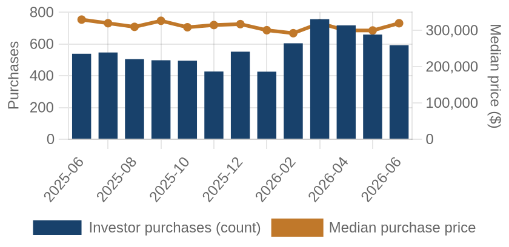
Investor purchases per month (bars) and median purchase price (line), trailing 13 months.
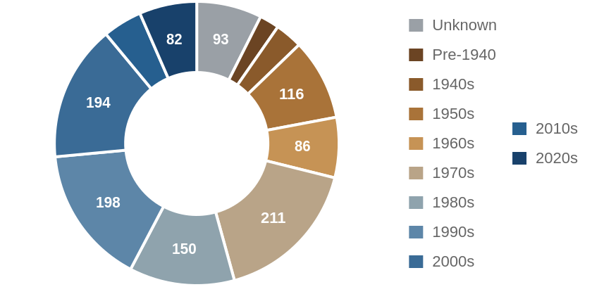
Which vintage of housing investors bought this edition, by decade built.
Where the Money Went
The geography of the period's investor activity: which zip codes saw the most recorded deals, and the largest individual transactions at street level.
The 8 busiest zip codes for investor deals
Pins rank the busiest zips by recorded investor deals (purchases + flips of existing homes) this period — #1 busiest; orange = top 3; pin size scales with deal volume. Median buy is the typical investor purchase; median sale the typical flip resale. Click a pin for details; full table below.
| # | Zip | Area | Purchases | Flips | Median buy | Median sale |
|---|
| #1 | 85614 | Green Valley | 92 | 3 | $235,000 | n/a |
| #2 | 85710 | East Tucson | 60 | 12 | $278,558 | $311,000 |
| #3 | 85705 | Amphi / North Tucson | 64 | 7 | $195,000 | $210,000 |
| #4 | 85713 | Menlo Park / Barrio Hollywood | 46 | 7 | $220,000 | $195,000 |
| #5 | 85716 | Sam Hughes / Blenman-Elm | 47 | 3 | $315,000 | n/a |
| #6 | 85719 | University / West University | 46 | 4 | $346,000 | n/a |
| #7 | 85718 | Catalina Foothills | 47 | 2 | $699,984 | n/a |
| #8 | 85755 | Oro Valley North | 48 | 0 | $542,500 | n/a |
A representative deal in each of the busiest zips
One deal per zip: the largest matching this market's typical house (typical for this market: 1518 sqft, 3 bed, built around 1976; priced within 4x the county assessment and under 5x its own zip's median).
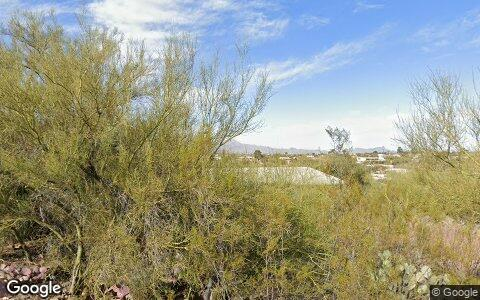
$749,000 · Purchase
1642 E ENTRADA TERCERA, Tucson 85718
Single family · 2,155 sqft · May 27
Street View Mar 2025 — before the purchase
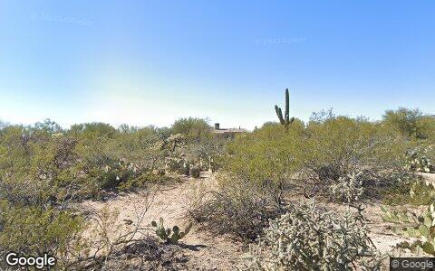
$610,000 · Purchase
12575 N MOUNTAIN BREEZE DR, Tucson 85755
Single family · 1,400 sqft · May 1
Street View Feb 2023 — before the purchase
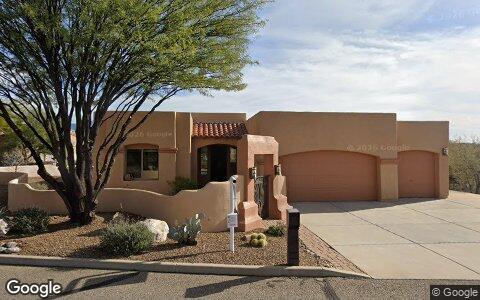
$599,000 · Purchase
1367 S MADERA RESERVE DR, Green Valley 85614
Single family · 2,337 sqft · May 5
Street View Jan 2026 — before the purchase
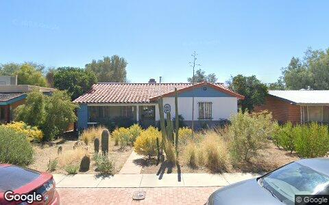
$580,000 · Purchase
2240 E 2ND ST, Tucson 85719
Single family · 1,971 sqft · May 8
Street View Mar 2022 — before the purchase
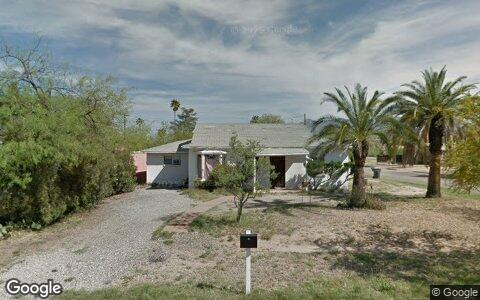
$500,000 · Purchase
2621 E ADAMS ST, Tucson 85716
Single family · 1,626 sqft · Jun 23
Street View Apr 2019 — before the purchase
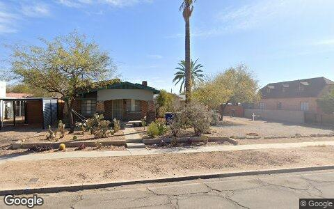
$445,000 · Purchase
1228 N 4TH AVE, Tucson 85705
Single family · 1,304 sqft · May 13
Street View Feb 2025 — before the purchase
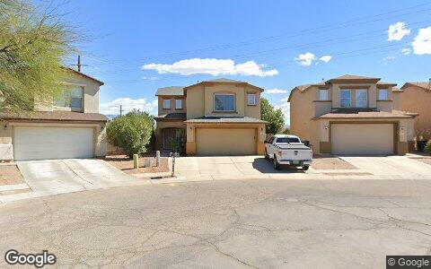
$372,500 · Purchase
1925 S MCCONNELL DR, Tucson 85710
Single family · 2,015 sqft · Jun 4
Street View Apr 2025 — before the purchase
Deal sheet — private lending, in date order
Private loans recorded against residential property this period, oldest first.
| Date | Lender | Amount | Property | Use |
|---|
| May 22 | Zimmermann Christoph | $215,000 | 1599 W King Ave, Tucson 85713 | Single family |
Largest flip margin deals of the period, at street level
Gross margin = recorded sale price minus the flipper's recorded purchase price. Purchase deeds are recoverable for roughly 4 in 10 flips; rehab and carry costs are not public record.
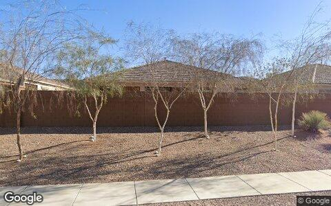
$203,920 gross · bought $68,040 (Jun 2025) → sold $271,960
9847 N FULBROOK WAY, Marana 85653
Single family · 1,929 sqft · Jun 23
Street View Jan 2026 — during the flip
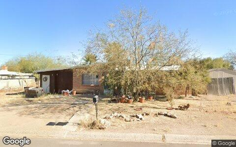
$39,000 gross · bought $130,000 (Feb 2025) → sold $169,000
5547 S MEADOWLARK AVE, Tucson 85746
Single family · 1,040 sqft · May 19
Street View Jan 2025 — before the flip (pre-renovation)
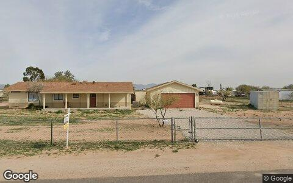
$22,000 gross · bought $138,000 (Aug 2025) → sold $160,000
12402 N LUCKETT RD, Marana 85653
Mobile / manufactured · 1,248 sqft · May 20
Street View Jan 2026 — during the flip
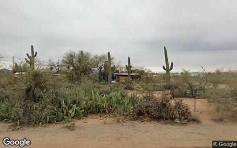
$14,000 gross · bought $37,000 (Feb 2026) → sold $51,000
12021 N BLACKTAIL RD, Marana 85653
Mobile / manufactured · 1,008 sqft · May 13
Street View Feb 2026 — during the flip
Flip Structure — Year over Year
How the flip market itself is changing: margins, who is doing the flipping, what they flip, and where. Same two calendar months, this year vs last, from the current data extract.
| Flip market structure | Same months last year | This edition |
|---|
| Flips sold | 224 | 123 |
| Median sale | $301,400 | $284,500 |
| Median $/sqft | $206 | $203 |
| Sale vs county-assessed | 1.32× | 1.26× |
| Median gross margin (matched buys) | $89,000 | $82,000 |
| Median margin % | 45% | 41% |
| Median hold | 6.5 mo | 5.7 mo |
| Homes bought by flippers | 299 | 245 |
| Net to inventory (bought − sold) | +75 | +122 |
| Active flippers | 115 | 59 |
| Top-10 flippers' revenue share | 48% | 56% |
| Median house: sqft / beds / built | 1479 / 3 / 1979 | 1456 / 3 / 1977 |
| Pre-1950 stock share | 4% | 7% |
| 2–4 unit share | 0% | 0% |
| Median distance from downtown | 14.2 km | 14.2 km |
Homes bought counts every deed recorded to a known flipper in the window, resold or not. Net to inventory is that minus flips sold. The standing stock is in the Flip Pipeline section.
Attributed profit per flip (per-investor aggregates, by drop period): Feb 26→Jun 26: 162 flips, n/a (revisions) · Jun 26→Aug 26: 118 flips, $117,955/flip.
County mix (share of flips, last year → this edition): Pima 100%→100%.
Biggest zip share moves: Littletown / Airport 4.5%→9.8% · Palo Verde / Rosemont 6.7%→2.4% · Rita Ranch 5.8%→1.6% · Vail 0.9%→4.9% · Drexel Heights 1.8%→4.9% · East Tucson 6.7%→9.8%.
Flip Pipeline — Buying, Selling and Inventory
Homes bought by known flippers and homes they resold, per month, alongside the stock sitting in flipper hands. A house enters inventory when a flipper buys it and leaves on the next recorded sale, at any price. Purchases still unsold after five years are treated as holds and drop out.
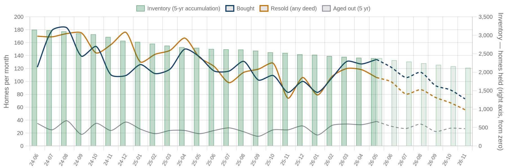
Solid = recorded, dashed = projected. Green bars are inventory on the right axis: homes bought and not yet resold. Aged out is purchases passing five years unsold. Inventory moves by bought minus resold minus aged out.
| Flip pipeline | Bought / mo | Resold / mo | Aged out / mo | Inventory |
|---|
| Latest recorded month (2026-05) | 177 | 115 | 70 | 3,631 |
| Projected (2026-11) | 98 | 61 | 48 | 3,302 |
Method: a straight-line trend through the last 24 months, adjusted for the month of the year. Tested by hiding the most recent six months and predicting them, it missed purchases by 24%, sales by 6% and inventory by 4% on average — The series stops before the newest month or two, where deeds are still recording.
Who's Funding the Deals
First mortgages open on flipper purchases from Jul 2025 – Jun 2026 that have not yet resold. 80% carried recorded debt; the rest closed cash or off-record. Ranked by deal count.
80%
Purchases financed
891 of 1,107 flipper purchases carried a recorded first mortgage
$225,834
Typical loan
median 0.96× the purchase price
34%
Funding the rehab too
300 of 891 loans exceed the purchase price, so the lender is covering work as well as the buy
| Lender | Loans | Borrowers | Median loan | Loan vs price | Funds rehab | Median purchase |
|---|
| Flipfast Loans LLC | 48 | 6 | $215,500 | 1.27× | 69% | $198,750 |
| Nova Financial & Inv Corp | 41 | 39 | $280,321 | 0.98× | 27% | $300,000 |
| Nova Financial & Investment Co | 29 | 24 | $168,000 | 0.77× | 21% | $215,400 |
| Crosscountry Mortgage LLC | 24 | 22 | $268,078 | 0.98× | 38% | $267,450 |
| Archwest Funding LLC | 23 | 4 | $226,150 | 1.09× | 65% | $217,575 |
| Fairway Independent MTG Corp | 21 | 20 | $309,294 | 0.98× | 24% | $318,000 |
| V.i.p. Mortgage INC | 19 | 19 | $350,000 | 0.93× | 11% | $350,000 |
| Prosperity Home Mortgage LLC | 18 | 18 | $333,500 | 0.83× | 6% | $421,000 |
| Wells Fargo Bank NA | 18 | 17 | $104,358 | 0.60× | 17% | $205,500 |
| Alta Funding & Investments LLC | 16 | 11 | $217,500 | 1.16× | 75% | $187,500 |
Rates and terms are not published: the county feed models both. Borrowers counts the distinct flippers on each lender's book. Loan vs price is the recorded first mortgage divided by what the buyer paid. Above 1.00x the lender is funding purchase plus rehab; below it the buyer brought cash to the table. Blanket mortgages covering several parcels are excluded, as are loans outside 0.1x-3x the price. Rates and points are not public record.
Flipper Profile — The Working Flipper
The 70th–90th percentile of local flippers by lifetime flip count — the established operators below the whales: 4–11 lifetime flips each. Bath counts are not in the assessor extract.
123
Flippers in the band
each with 4–11 lifetime flips (avg 6.0)
$81,000
Median gross margin
4,040 flips matched to their purchase price
5.5 mo
Typical hold
purchase to resale, matched deals
1518 sqft · 3 bd
Typical house
median year built 1976
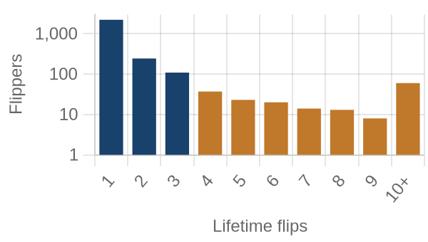
flippers by lifetime flips · orange = this band
Where they work: East Tucson (85710) 8% · Palo Verde / Rosemont (85711) 8% · Rita Ranch East (85730) 8% · Amphi / North Tucson (85705) 6% · Menlo Park / Barrio Hollywood (85713) 5%.
Market Pulse
| per month, 2025 | per month, 2026 | change | avg/mo 2yr | avg/mo 4yr |
|---|
| ▼ Homes bought by flippers | 150 | 123 | -18% | 146 | 168 |
| ▼ Flips sold (deeds) | 112 | 62 | -45% | 139 | 179 |
| ▲ Lending deals funded | 52 | 122 | +136% | — | — |
| ▲ Seller/notes held (net) | 39 | 559 | +1323% | — | — |
| ▼ Investors (net) | 343 | 270 | -21% | — | — |
Flips and flipper purchases = recorded deeds, same two months each year; their 2- and 4-year columns are per-month averages of the deed series. The remaining rows come from the investor file, which spans 13 months, so they have no multi-year average (2026: Jun 2026 → Aug 2026; 2025: Feb 2026 → Jun 2026).
Past Issues
Methodology
Source Data
County recorder & assessor via FARES
Every figure is computed from recorded instruments (deeds, mortgages, assignments) and assessor property records for the five counties of the Tucson-Elyria MSA. No surveys, no estimates, no listings data.
This edition analyzes transactions dated May 1 – June 30, 2026, as recorded through the 2026-08 data extract.
Who Counts as an Investor
Transaction-pattern identification
Investors are entities whose recorded transaction history looks like investing: rental holding (landlords), short-hold resales (flippers), private mortgage lending, note holding, or contract assignment (wholesalers). Banks, homebuilders, iBuyers, SFR funds, and government entities are identified by name and reported separately from small investors.
How Comparisons Work
Attribution deltas + same-window comparisons
The Market Pulse reports activity attributed between successive data drops, from the per-investor lifetime totals maintained upstream — periods differ in length, so per-month rates are shown. Elsewhere, "vs. year ago" compares the same calendar months one year earlier, counted from the same data extract. Transfers under $5,000 (quitclaims, partial interests) are excluded everywhere. Counts lag recording by 4–8 weeks, and the newest month can grow up to ~15% as late records arrive — direction is reliable before magnitude.
Known Limits
Floors, not ceilings
Wholesale assignments only appear when they touch a recorded deed, so those counts are a floor. Flip hold times are measured from the prior recorded sale. Names are the owner of record, which may be an LLC or trust.
About
Purpose
A working tool for small real estate investors in Greater Tucson: what actually closed, where, at what prices, and what it suggests checking next — one theme per issue.
Cadence
Published with each bi-monthly data drop, covering the two most recent complete months of recorded activity.
Disclaimer
Observations from public records, not investment, legal, or tax advice. Past activity does not guarantee future results. Verify any property or counterparty independently before transacting.